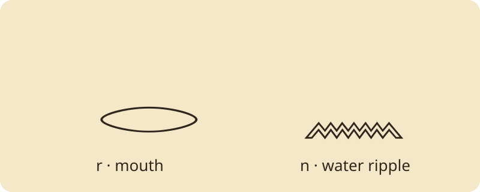

Language & Literature · Ancient writing · Grades 6–12
Learning Egyptian Hieroglyphs
How can a bird stand for a sound? Learn to distinguish a sign’s picture from its job in a word. This is a first reading lesson in the ancient Egyptian writing system.
30–40 minutes: observe → learn signs → assemble → explain.
Your reading mission
- Distinguish the writing system from the language it records.
- Read a small set of signs using the supplied key.
- Explain a reading limit with evidence from your activity.
Predict: Must a picture-shaped sign always mean the object it depicts? Discuss before opening the sign bank.
1 · Observe the writing
Hieroglyphs recorded the Egyptian language. A sign can represent a consonant or group of consonants, a whole word, or a meaning category. A determinative adds a meaning clue without being pronounced. Vowels were normally omitted. Scholarly transliteration records signs in Latin characters; it does not recover every ancient vowel.

Read into the faces
Choose an orientation and inspect the quail chick. This single-sign demonstration shows the ordinary direction cue, not a complete inscription.
𓅱Faces left: normally begin at the left and read toward the right.
2 · Inspect the sign bank
Select a sign to inspect its reading. Latin labels are transliterations, not English translations.
Choose a sign to reveal its reading note.
Printable sign key
| Reading | Meaning or picture | Note |
|---|---|---|
| r | mouth | D21 · one-consonant sign |
| n | water ripple | N35 · one-consonant sign |
| m | owl | G17 · one-consonant sign |
| p | stool | Q3 · one-consonant sign |
| t | bread loaf | X1 · one-consonant sign |
| s | folded cloth | S29 · one-consonant sign |
3 · Assemble and test
Build rn, the Egyptian word for “name,” with the mouth followed by the water ripple.
Inspect a sign above, then add it. You can repeat signs or undo a choice.
No signs yet.
Use the sign bank to begin.
Reading limit: This is a horizontal classroom arrangement of two consonant signs. Authentic inscriptions arrange signs in balanced groups and may add meaning signs. “Ren” is a conventional reading aid; the inserted e is not a written ancient vowel.
4 · Explain the evidence
An animal sign faces right. On which side would you normally begin reading its row?
Choose an answer; you can revise it.
Your writing stays on this page until you leave. Use Print lesson to keep a copy.
Hands-on extension
Copy rn on paper. Label each consonant, then explain why you cannot recover all vowels from these two signs. Next, investigate how a determinative could narrow a word’s meaning.
Teacher guide & exit ticket
Spend 5 minutes predicting, 10 inspecting, 10 assembling, and 5 explaining. Model the distinction between sign, transliteration, and translation before independent practice. For younger readers, use just the two target signs and explain answers aloud.
Success evidence: rn · name; explain why the lesson key cannot translate every ancient inscription. Ask students to name one observation and one remaining uncertainty.
Sources & next steps
The Met · The Art of Ancient Egypt, pp. 47–52 — background and reading conventions.
UCL Digital Egypt · the Gold name — an example of rn used for “name.”
Font license · The local Noto fonts keep signs legible without an external font service. Diagrams are modern learning aids.